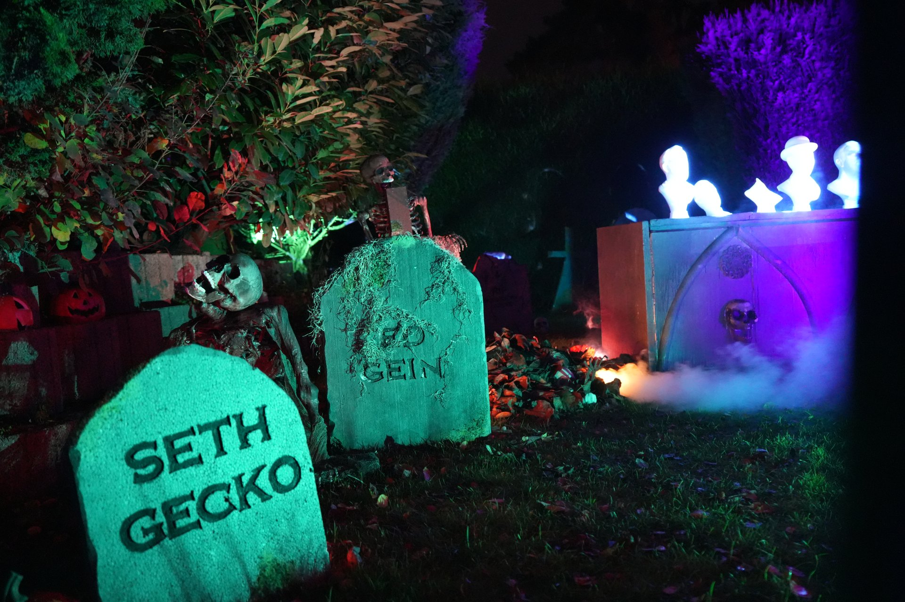
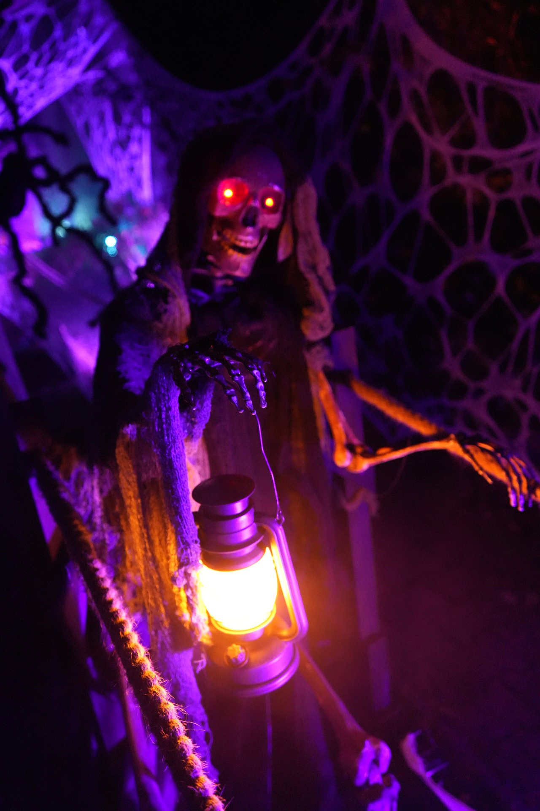
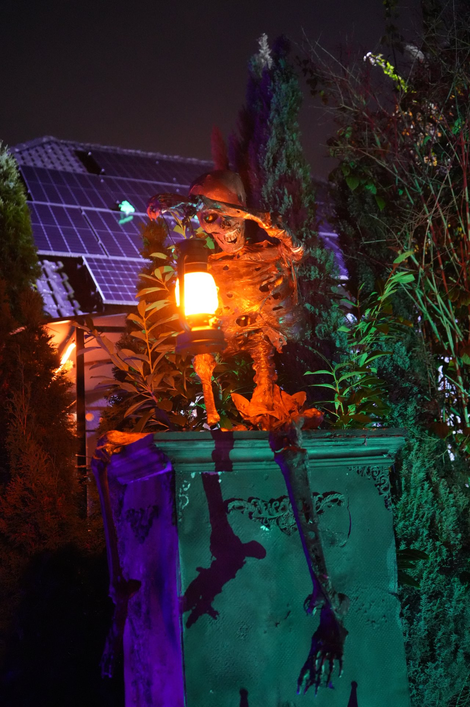
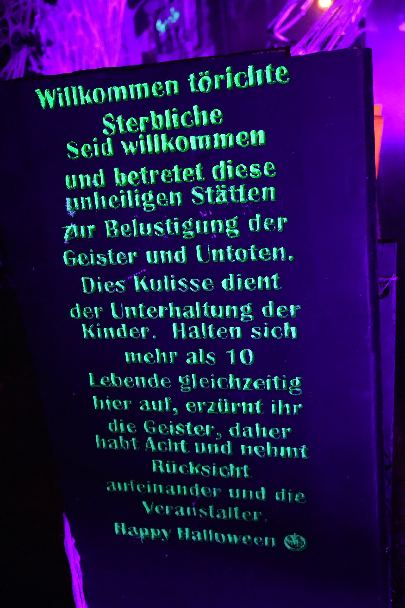
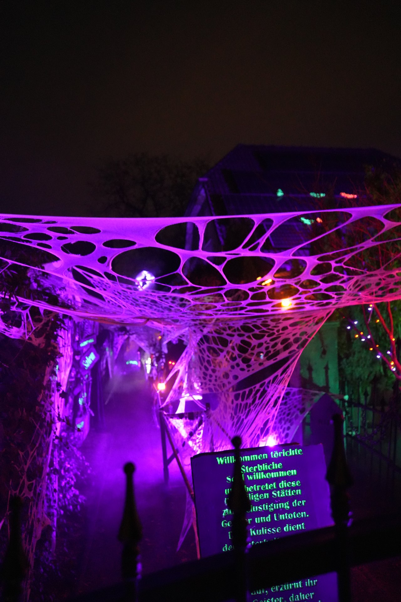
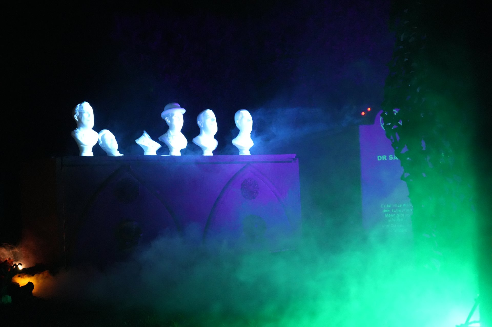

Erinnerungen an die Nacht
Was bleibt, wenn Halloween vorüber ist.
✦
Halloween 2025
Laternenlicht, leuchtende Augen und Nebel zwischen den Grabsteinen. Sechs Erinnerungen an unsere Halloweennacht.
Wähle ein Bild, um es in Ruhe zu betrachten.












Weitere Halloweennächte finden hier nach und nach ihren Platz.